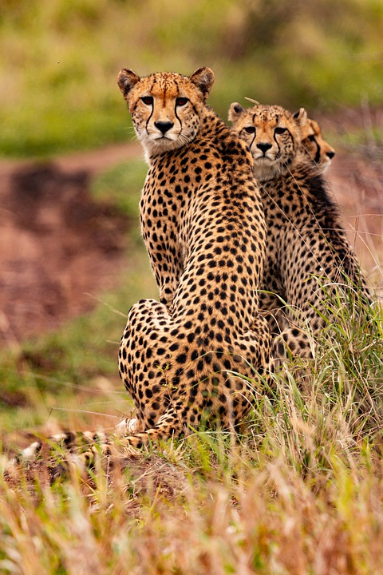

Die männlichen und weiblichen Tiers treffen sich nur zur Fortpflanzung. Die Weibchen leben nach der Geburt alleine mit ihrem Nachwuchs. In der Regel besteht der Wurf eines Weibchens aus drei Jungtieren. In einigen selten Fällen können aber auch bis zu 8 Tiere geboren werden. Während die Weibchen nach der Entwöhnung weiterziehen, bilden die männlichen Geparde Gruppen.
Geparden sind mit 3 Jahren Geschlechtsreif. Die Tragzeit beträgt um die 95 Tage. Nach dem Wurf lebt das Weibchen für 8 Wochen in einem Bau. Geparden haben keine Möglichkeit sich und den Nachwuchs vor Löwen und Hyänen zu verteidigen. Daher müssen sie einen sicheren Unterschlupf für die Zeit, in der sie Jagen, suchen
